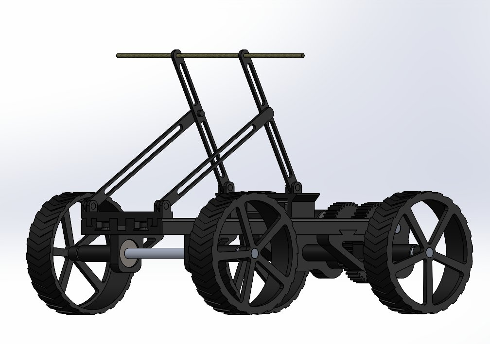
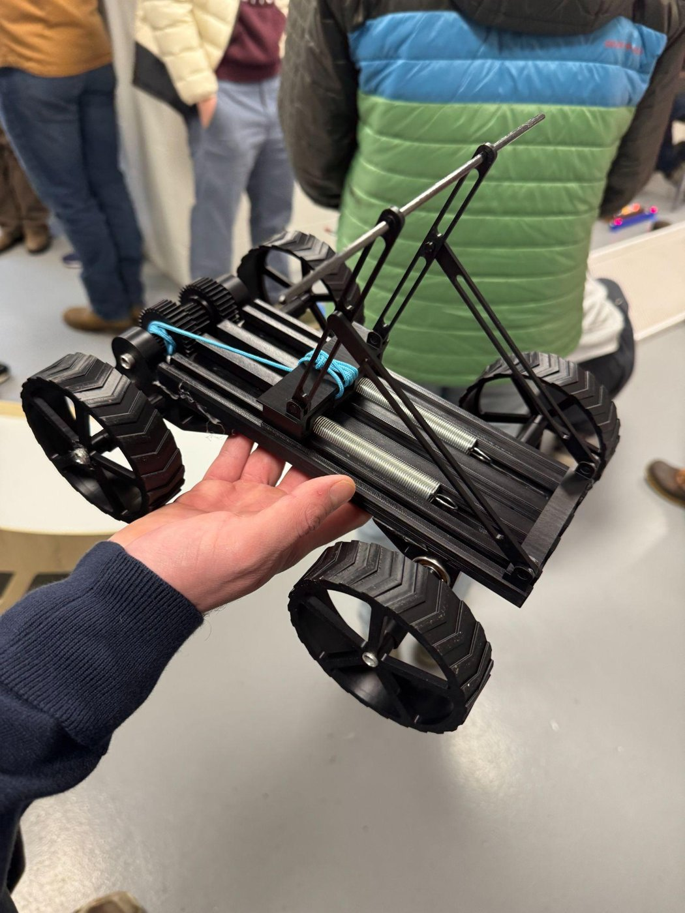
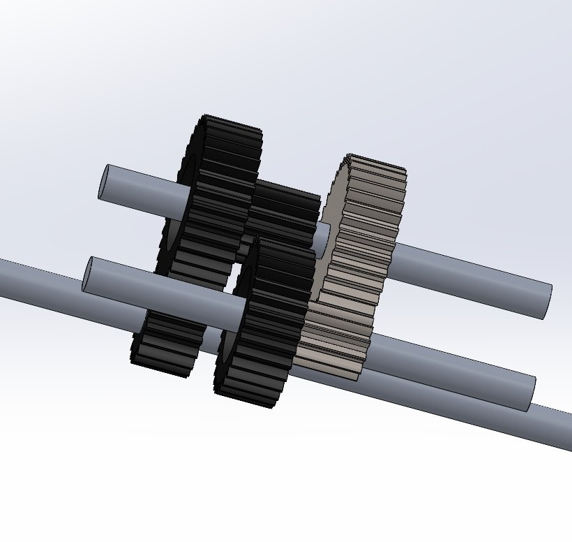
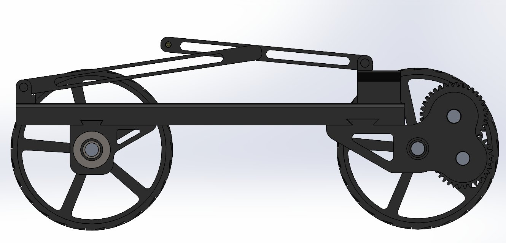
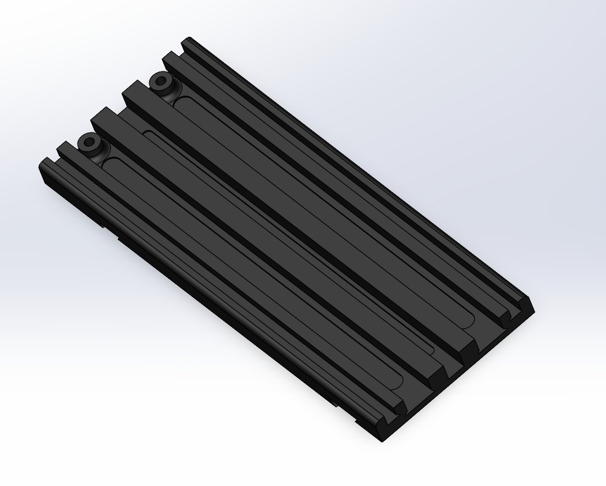

Project 01 · MAE 2020
A 3D-printed obstacle-course vehicle that turns spring tension and a ramp drop into controlled motion through a 12:1 compound gear train

Key results
3rd
place in the competition, earning 1,200 points
12:1
two-stage compound gear train (36:12 · 32:16 · 36:18)
9 in
arm height reached from a body that starts under 4 in tall
1.5M+
views being approached by Dean West's Instagram reel of the car
Build a vehicle that scores as many points as possible on an obstacle course using only stored energy: the height of a four-foot ramp, three mechanical springs, and a 5V supercapacitor driving a small propeller.
Two springs pull a lightweight carriage along a guide track in the chassis. A string from the carriage wraps a deliberately small input axle, so the pull produces as much torque as possible, and feeds a two-stage compound gear train to the 3.75 in wheels.
The first full print had inconsistent clearances that caused friction and backlash, so the gear train got its own test print before the final vehicle. Late changes fixed the remaining problems:
On test day the car cleared the ramp and long jump and hit a spinner on its first two runs (+400 points each). It drifted left on later runs, likely from a loose right wheel, and caught the side bumpers. Weight distribution and wheel retention were the next things to refine. Across all iterations the team printed 432.32 g of ABS.
Figures



